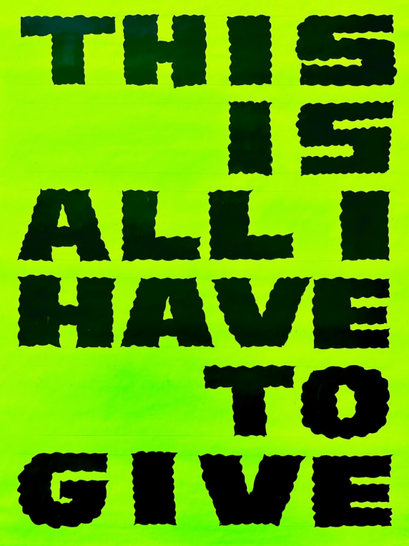

This is all I have left to give by Alberto Aguilar
As humans we have access to an endless amount of ideas
Sometimes we do not believe that they are good enough
So they sit dormant or fade away in our subconscious
Making ideas into reality is a skill that one can develop
It’s not necessary for the idea to even be a good one
Sometimes it is just a step to generate other ideas
I find value in applying a self-imposed framework
Some see this as an infringement on freedom